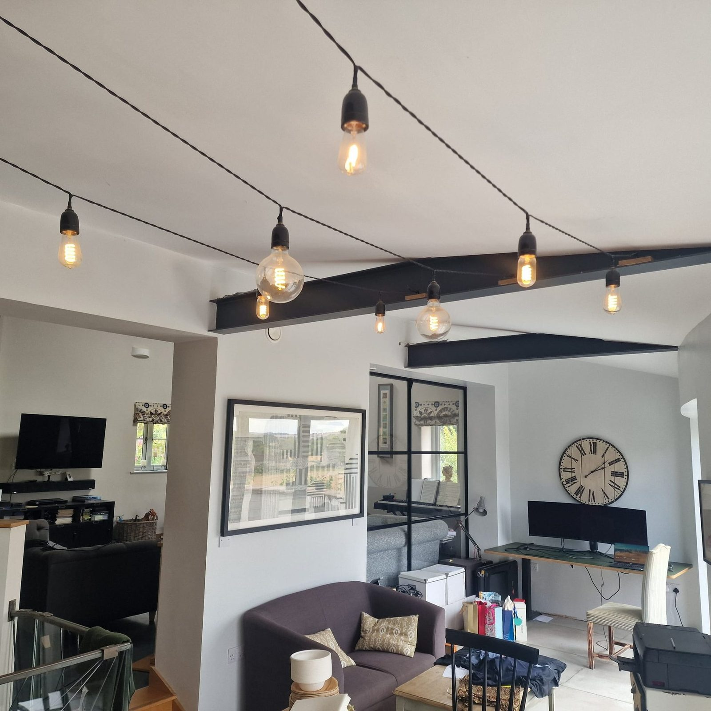
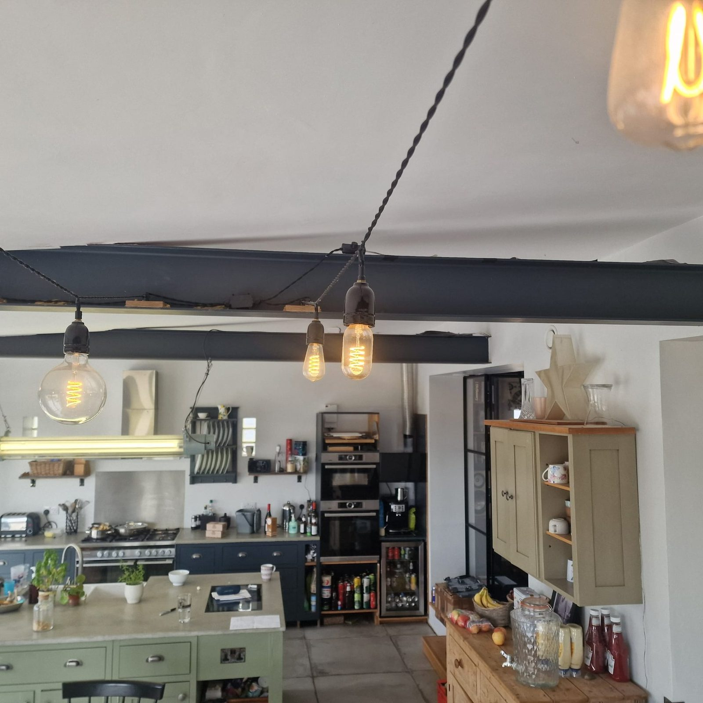
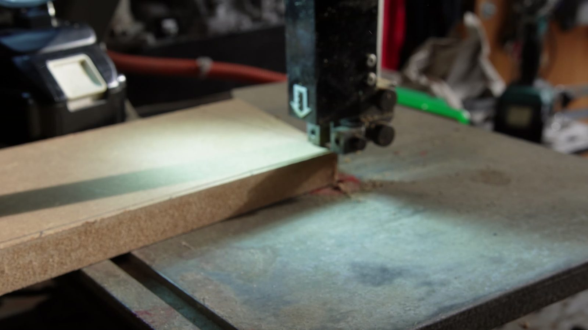
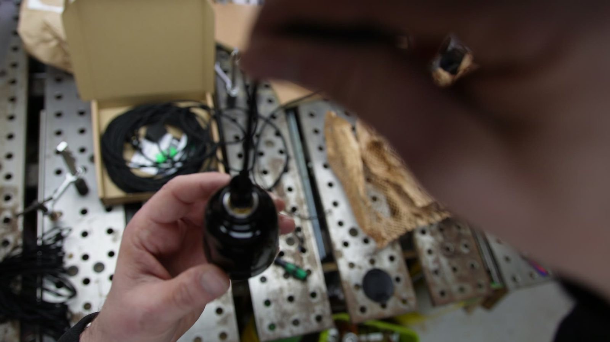
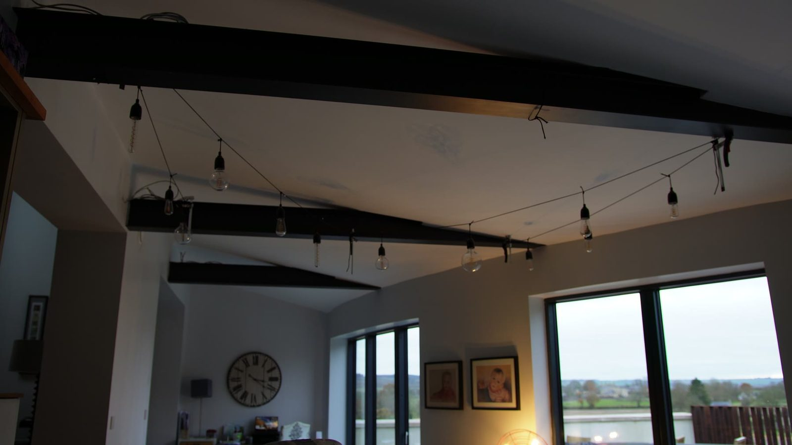

Wiring
Lighting / wiring / house details
Vintage String Lights
Custom string lights for the house: twisted cable, warm filament bulbs, little made parts, ceiling beams, and enough workshop faff to make buying the dull version feel like surrender.
Off-the-shelf lighting would have lit the room. These make it feel like somewhere specific, with the cable and bulbs sitting comfortably against the steel beams and timber.

- Bulbs
- —
- Cable
- —
- Fittings
- —
- Run length
- —
- Control and dimming
- —
- Build time
- —
What went wrong
To be written up.
What I would change
To be written up.
Workshop cut
Small parts, lots of repetition
The build starts in the workshop: cutting little blocks, laying out parts, wiring holders, testing bulbs, then turning a pile of electrical bits into something that belongs in the room.
Installation
Threading the room
The idea
Why bother
Lights are easy to buy. But a run of lighting across a room changes the feeling of the space, so it was worth making something that felt deliberate: warm, slightly industrial, and not too polished.
The build
Wires, blocks and bulb holders
Cut, mark, assemble, test, install, adjust, repeat. Perhaps forty times, for a job I had estimated at an afternoon.



